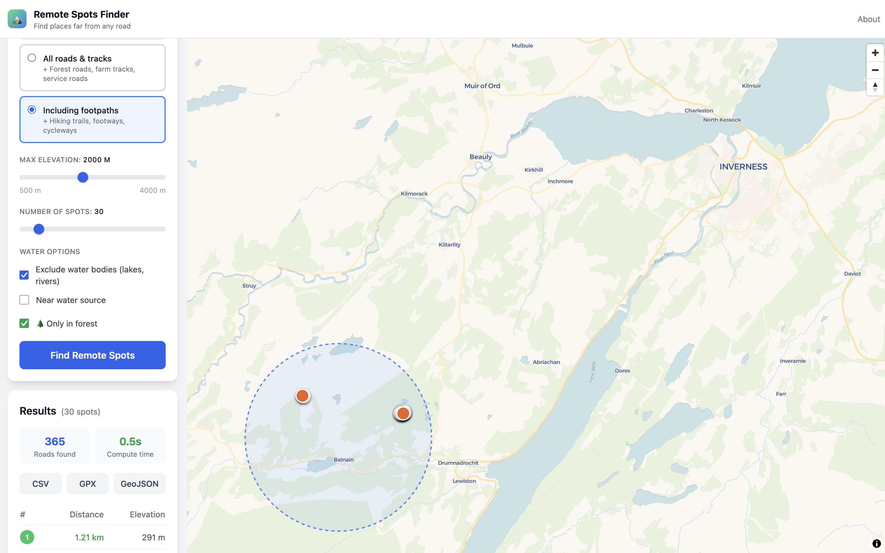

Wild Camping · Photography · Off-Grid
We calculate the exact points furthest from any road — and give you the GPS coordinates. Built on OpenStreetMap data covering the entire planet.
Free to try · No signup required

How it works
Click anywhere on the map to set your search center. Works globally — from the Scottish Highlands to the Swiss Alps.
Choose search radius, terrain type, forest cover, and water proximity. The algorithm does the rest.
Export to GPX, GeoJSON, or CSV. Navigate directly to your remote spot with any GPS device or app.
Built for
Whether you're planning a wilderness retreat, scouting locations, or preparing for the unexpected.
Find legal bivouac spots far from trails. Filter for forest cover and nearby water sources — ideal for multi-day backcountry trips.
No people. No cars. No powerlines. Just untouched landscapes waiting for your lens.
Systematically identify fallback locations with forest cover, water access, and terrain filters.
Pricing
Start for free. Upgrade when you need more.
Questions
Remote Spots uses OpenStreetMap road data and a distance transform algorithm to calculate the exact points furthest from any road within your chosen search area. The algorithm creates a grid over your area, maps all known roads, and then finds the coordinates with the maximum distance from the nearest road. Results are precise to the meter and returned as GPS coordinates you can export directly to your navigation device.
Yes. Remote Spots works anywhere on Earth where OpenStreetMap has road data — which covers virtually the entire planet. It works especially well in Europe, North America, Scandinavia, and other well-mapped regions. In more remote parts of the world, results may be less precise due to fewer mapped roads.
Absolutely. Remote Spots is designed for wilderness campers, among others. Use the forest cover filter to find spots with tree canopy and the water proximity filter to stay near a water source — ideal for finding bivouac locations. Always check local regulations regarding wild camping in your region. In many European countries like Sweden, Norway, Finland, and Scotland, wild camping is broadly permitted under "Right to Roam" or "Everyman's Right" laws.
Yes, the free plan includes a 5 km search radius, up to 10 spots per search, an elevation filter, and CSV export. The Pro plan is a one-time $5 payment (no subscription) and unlocks 50 km radius, 50 spots, forest and water filters, footpath mode, and GPX/GeoJSON export.
Remote Spots uses road, path, forest, and water data from OpenStreetMap — the world's largest open geographic database, maintained by a community of over 10 million contributors. This means the data is constantly improving and covers even remote regions of the world. No personal data is collected or stored when you use the app.